Research & engineering portfolio · Seongnam, Korea
PORTFOLIO
Machine metacognition, assistive hardware and civic systems. One question runs through all of it: does a system know when it is about to be wrong?
Every entry below says what is built, what is only simulated and what is still a plan.
Nothing here is described as published unless it is.
Contents
21 projects, 8 manuscripts and the record behind them.
About Me
Seongnam, Korea. I build AI systems and physical models, then test them until they break.
I build AI systems and physical models, then test them until they break.
One question runs through the work: does a system know when it is about to be wrong?
My first result on that question came from MetaMirage.
Across 7 frontier language models, the ones that answered best were the worst at noticing a trap. The same method carries into everything since: register the pass mark, run the test, report the number that came back.
I run Arbiter, a registered company in Korea.
It builds software that signs and records automated decisions.
This portfolio states what is built, what is only simulated and what is still a plan.
Much of the company code sits in private repositories and can be shown to reviewers on request.
Chair, Seongnam Youth Council
Since January 2025. Elected as a member by youth vote, then elected chair by the members. There I turn the same questions into draft ordinances.
Founder, Arbiter (아비터)
Registered business in Korea.
Founder, Youths Unite
International news reports and SDG education decks, published every two weeks.
Global Youth Goodwill Ambassador, Ethiopian Embassy programme
16th cohort, February 2026 to January 2027. My SYNAPTIC writing on Ethiopia belongs to this term.
Part 01 · 8 projects
Research
Questions I can test, and the number that came back.
- Landauer: how many joules does one language-model request actually cost? In draft.
MetaMirage
A benchmark that asks whether a language model notices a hidden flaw before it answers.
Submitted April 2026. Code and data public
Built
50 hand-written tasks in 5 families, each a matched pair: one answerable, one that only looks answerable. Scoring runs through an LLM judge with three rubric modes, and the statistics scripts and public dashboard ship with it. Sole author of the task set, the scoring pipeline and the analysis.
Result
Trap detection and clean accuracy correlate at r = −0.84 across 7 frontier models (95% CI −0.98 to −0.24, p = 0.018). The two most accurate models, claude-opus-4-5 at 100% and gpt-4o at 98.2%, rank last on monitoring. claude-haiku-4-5 breaks the pattern, with the top Metacognitive Index (0.615) at 96.3% accuracy. So the trade-off is trainable.
Basis
n = 7, which is small. Bootstrap CI −0.99 to −0.58 and permutation p = 0.023, each from 10,000 resamples. Removing any one model keeps the sign. A second judge on 100 responses gave kappa 0.65 to 0.97 by dimension. By family, expertise_trap (−0.79) and forced_abstention (−0.81) drive the flip, and confidence_inversion goes the other way (+0.89).
Next
The repository stays frozen as submitted. Ascent carries the question into a live loop.
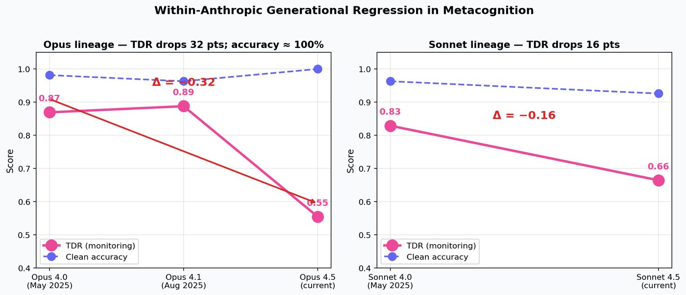
When does one temperature suffice?
Temperature scaling repairs a model's confidence with a single number. This paper predicts where that single number will fail.
Under review, IEEE ICASSP 2027
Built
The theory, the experiments and an audit script with 212 checks that bind every number in the paper to a saved result file.
Result
Calibration gain tracks how much the fitted temperature varies across a grouping of the data, at Spearman ρ = +0.964. Over the six input-side groupings, the reduction in calibration error runs from 0.4% to 54.1%. The paper reports five negative results, two of them registered in advance.
Basis
Seven groupings of 14,042 MMLU questions. Predicted ratio 3.46, measured 2.99 ± 0.10.
Next
Notification is due 2027-01-13.
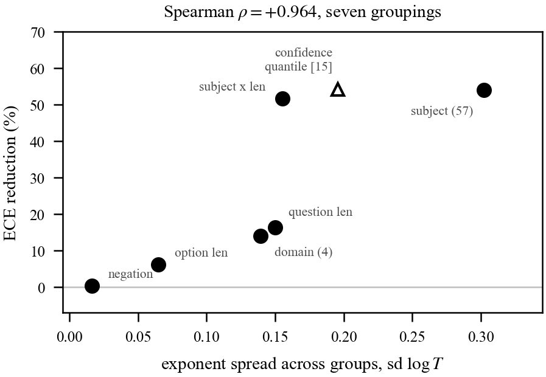
Aegis: a power law for cooled chips
A closed form for how to spread power across a surface cooled by a single pass of coolant.
Manuscript. Water bench still a plan
Built
The derivation, a forward-march solver that shares no algebra with it, and a two-dimensional conjugate solve.
Result
Against a uniform map at the same junction limit, an exponential allocation sustains G(β) = (1 − e−β)(1 + β) / β of the power. That is +0.50% at reticle scale and +19.72% at wafer scale with the same stack and coolant. Several of the project's own hypotheses were rejected along the way, including the lead one.
Basis
Theory and numerics. The march agrees to 1.3e-5 at 16,000 cells. G(β) has not been measured in hardware.
Next
Plan: the preregistered water bench that would measure G(β).
Ascent
Can a system tell which of its own changes are improvements? A predict-then-measure loop for testing that on the road from AGI to ASI.
Research harness in progress
Built
A harness where a system proposes a change to its own scaffold, forecasts the effect before seeing any result, and is then measured on held-out tasks. A change is accepted only on the measured win. The containment and safety protocol went in first.
Result
No positive result to claim yet.
Next
More registered runs up a ladder of seed models.
Structured Perturbation Stability
Does a transformer ignore changes that should not matter? A framework that measures sensitivity only along meaning-preserving changes.
Unpublished manuscript
Built
A formal framework with 5 theorems and proofs, and an implementation in the same repository.
Next
Finish the manuscript and submit it.
Medication safety data
Clinical rules for older patients often depend on a diagnosis. This study traces where that condition disappears from national health data.
Accepted e-poster, KOSMI 2026. Library public
Built
korean-pim, a dependency-free library for the Korean 2018 consensus list of potentially inappropriate medications: 102 items, including the 18 condition-dependent rules. npm test reruns 401 checks against the source article. Then a study of what those rules lose in national data.
Result
None of five national datasets carries a diagnosis or other clinical state. Delete the condition and eight rules widen from 285 people to 892. Of those 892, 68.0% do not have the condition (95% CI 64.9 to 71.4).
Basis
1,345 adults aged 65 or over in the US NHANES 2017 to 2018 survey, repeated on a second independent cycle (69.4%). The library has had no pharmacist or clinician review, so it is for research use and not for clinical decisions.
Next
Present the poster, then get a pharmacist review of the rule text.
Why agents fail on ARC-AGI-3
An ablation study on 25 public interactive games, built to find which part of an agent is the actual bottleneck.
Manuscript
Built
An offline harness that runs any agent across all 25 public games, a learned world model, and planners and goal priors built on top of it.
Result
A world model learns the game dynamics, with changed-cell accuracy of 0.648 on seen games. It falls to 0.088 on 5 held-out games. Planning over an accurate model clears 1 of 25 levels, the same as a random policy. Goal inference is the binding constraint.
Basis
Controlled ablation, run offline on the public game set. A scored leaderboard run is a separate test that this study does not stand in for.
Next
Work on agents that infer the goal.
Nemotron reasoning
A data-centric LoRA on a 30B reasoning model, plus an analysis of how much of the benchmark can be solved at all.
Late entry, unranked. Code public
Built
The 9,500-row training set was reverse-engineered into 6 rule-discovery families, with a solver written for each, and rank-32 LoRA adapters were then trained on verified reasoning traces. The pipeline has 509 passing tests.
Result
Exact solvers match ground truth at 100.0% on gravitational, unit_conversion and numeral. Bitmanip reaches about 41% in closed form, because the examples shown leave the rest under-determined. Score rose from 0.53 for the base model to 0.72.
Basis
The scored runs came after the deadline, because the first training run did not finish in time. The 0.72 was never ranked.
Next
The explainer and engineering log are public for anyone reusing the method.
Part 02 · 4 projects
Hardware
Physical systems, modelled before anything is cut or printed.
- NeuroVoice: reading speech from facial muscles, for people who have lost their voice. Details stay unpublished until it has been judged.
HarvestGuard
Solar cold storage for smallholder horticulture in sub-Saharan Africa, with the payment and record layer that runs on it.
Design and simulation only. No pod has been built
Built
Open models: an 8,784-hour dynamic run on real hourly weather, an 8,925-cell finite-volume model of the pod interior, and a sizing engine for 33 regions in 20 countries. On top of them, a signed, tamper-evident event ledger with 28 passing tests.
Result
The interior has a 2.47 K spread from evaporator to floor. At an 11 °C setpoint, 10 of 36 crates would be damaged while the thermostat still reads acceptable, and an average-temperature model would miss it. So the setpoint is 13 °C. A design moved unchanged from an East African highland site browns out for 3,383 hours a year at Ho. The Ghana design at 450 W stays in band for 98.9% of hours.
Basis
All of this is model output on NASA POWER climatology and real weather. None of it is a field measurement. The weakest input is the assumed 10 °C chilling floor, which is being checked with postharvest specialists.
Next
Plan: settle the crop floor, then build a first pod.
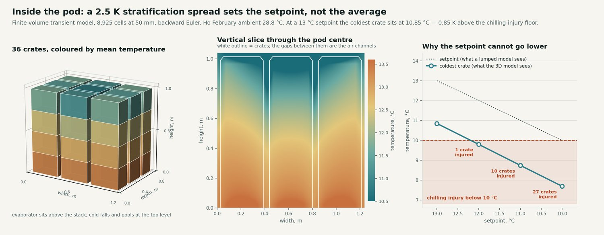
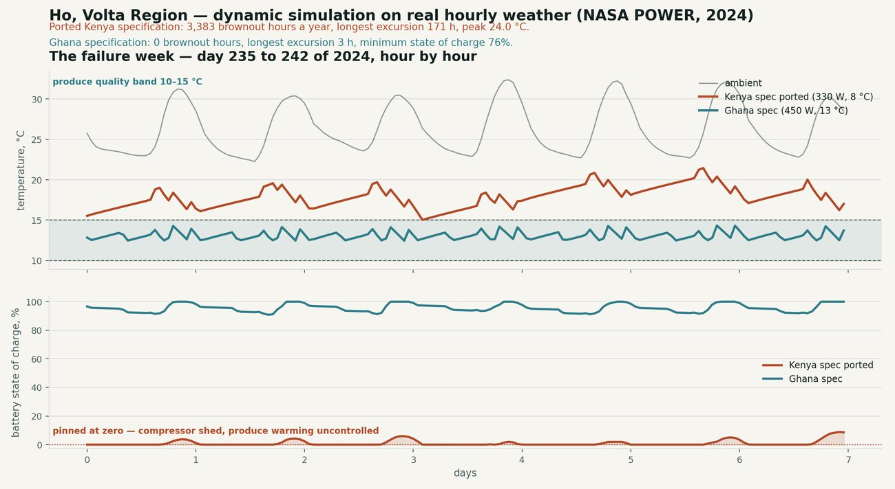
NeuroSwarm
A brain interface streams about 9.5 bits per second. Direct control of 100 robots needs about 192,000. How much of a swarm can one person steer?
Simulation plus public EMG data. No robots built
Built
A shared-autonomy stack: the operator sends a low-bandwidth intent, and each robot fills in its own motion with a decentralized controller. The decoder tests were preregistered on the public Ninapro DB2 gesture dataset. No human subjects have been recorded.
Result
A classical pipeline (TD + LDA) beat the deep decoder on the same data, 0.862 against 0.43 on subject 1 (chance 0.125). Real held-out EMG drove the simulated swarm to success in 30 of 30 trials, and shuffled commands in 0 of 30. Trained on other people, the decoder falls to 0.206 to 0.315, so each new user needs about two repetitions of each gesture.
Basis
Three subjects from a public dataset. The robots are simulated 2D kinematics.
Next
Plan: move the loop into a physics engine, then a hardware test.
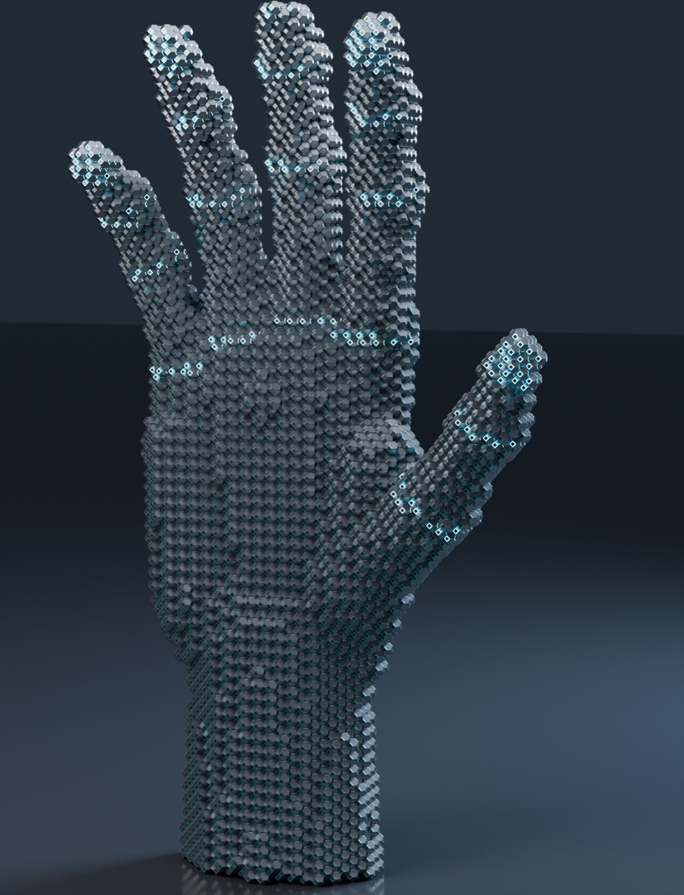
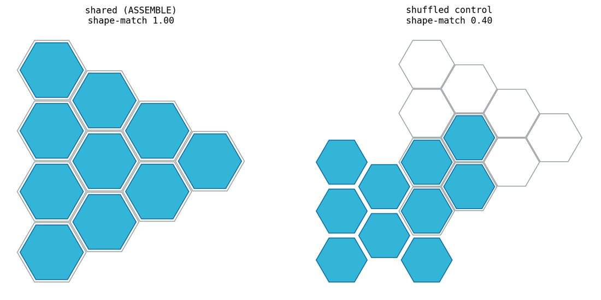
FELT
A low-cost refreshable tactile graphics display for blind students. Commercial displays cost $5,000 to $12,000.
Software built and tested. Hardware pilot planned
Built
The software: signed distance field to pin mask, differential updates, a driver protocol encoder and a headless simulator, with 133 tests. A 32 × 32 array means 1,024 pins.
Result
The analytic model gives a full refresh in 17.70 ms. The build also caught an error in the project's own proposal, which specified 4 driver ICs where the array needs 128, a factor of 32.
Basis
The refresh time comes from an analytic model. No hardware measurement is on record yet.
Next
Plan: an 8 × 8 pilot, with a gate of under 500 ms for a full refresh.
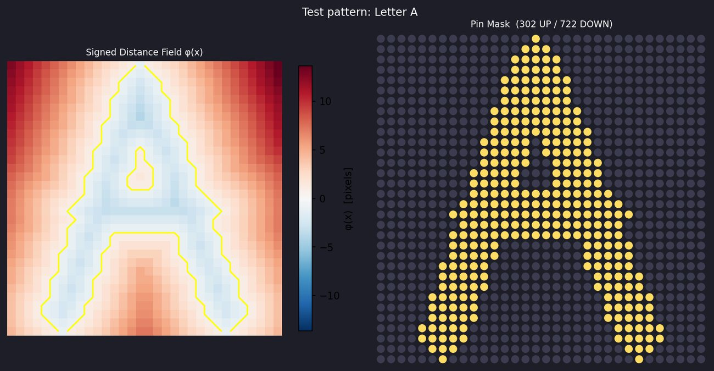
AirTouch
Can one scalar field govern both what you see and what you feel in mid-air?
Research in progress. Patent application being prepared
Scope
Two separate pipelines for vision and touch can drift apart silently. A single field cannot. The work is being carried out in simulation and formal modelling.
Next
Geometry and results stay private until the patent application is filed.
Part 03 · 4 projects
Ventures
Software that has to survive being wrong in public.
Arbiter
Software that applies a written rulebook to a fact, makes a decision and signs a record that anyone can check later.
Registered company
Built
The engine takes a fact, applies a written rulebook, decides and attests. Signing uses Ed25519, and records sit in a hash-chained ledger that verifies offline.
In private development
Signet: ask permission before an agent moves money. Tollgate: replay a compliance decision against the rules as they stood that day.
Next
Plan: first design partners.
Caravan
Customs classification with a citation behind every code, for importers who have to defend the decision.
Built. Public demo
Built
A retrieval classifier over 18,253 CBP CROSS binding rulings, live dated tariff ingestion, and signed decision records. An optional language-model reranker picks among retrieved candidates by index, so it cannot return a code that was never retrieved. The test gate requires 1,371 passing tests.
Result
Top-1 accuracy is 50.0% at 6 digits and 44.4% at 10 digits (n = 160). On novel products with no near-duplicate ruling, it is 28.6% and 22.9% (n = 70).
Basis
These numbers come after a leakage audit, in which 20% train and test contamination was found and removed. The classifier is a retrieval baseline, and every model-classified result goes to manual review.
Next
Measure the reranker's lift, which has not been run.
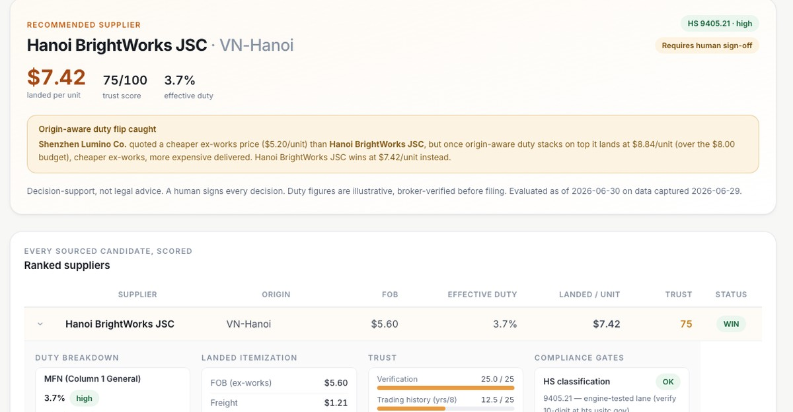
HALO and Goldentime
Two sides of voice phishing in Korea: catch the scam on the phone, then guide recovery in the first 30 minutes after it lands.
HALO pre-alpha, code public. Goldentime demo public
Built
HALO is an agent design for on-device Korean scam detection, with a family alert when a call or message looks wrong. Goldentime is a bank console and a seven-step recovery guide for victims. In Goldentime, rules set every amount, account number and legal step, and the language model only reads the victim's statement and writes the guidance.
Result
HALO's cloud baseline scored macro F1 0.880 on a battery of 25 synthetic Korean messages. Goldentime's private backend passes 525 tests.
Basis
25 messages is a smoke test. The on-device model and any real victim data are still ahead.
Next
Plan: evaluate on a larger labelled set, on the phone.
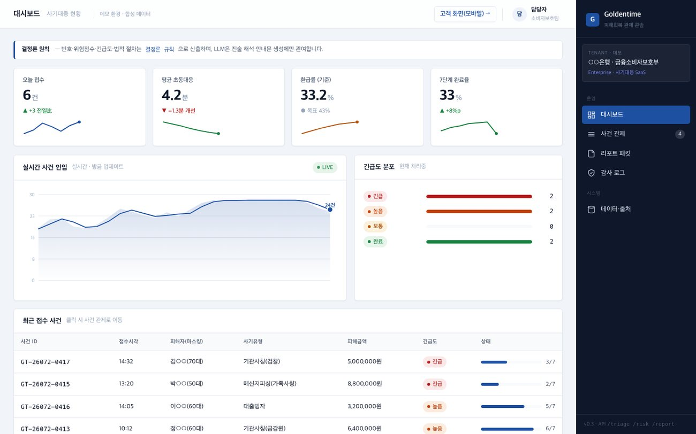
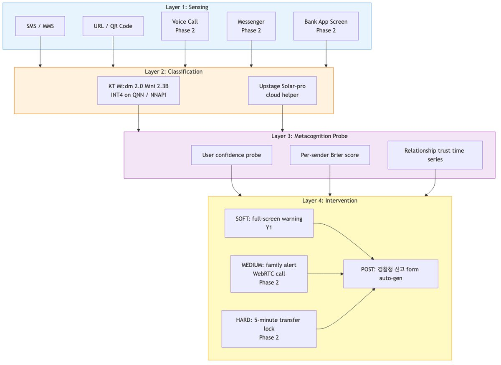
Olyak (올약)
Older patients collect prescriptions from hospitals that never talk to each other. Olyak checks the combined list.
Prototype. No pilot has run
Built
A prototype where every judgement is a deterministic rule with no language model in the decision path. It runs on the korean-pim library's 102 items.
Next
Plan: a first pilot under ethics review, and a pharmacist review of the rules.
Part 04 · 5 projects
Civic
Work that only counts once it is written into a rule the city keeps.
- cell-model: an interactive 3D animal cell with eight organelles, built with three.js.
- AlphaNexus: patent and trademark portfolio risk screening with four independent risk modules.
- WindTrace: locating an odour source from citizen reports and live wind direction, on Incheon public data.
- RootsLink: connecting underserved students with mentors, scholarships and local opportunity pathways.
Two draft ordinances
Chair of the Seongnam Youth Council. Two draft ordinances came out of that term.
Proposed to Seongnam City
Administrative AI
A draft Seongnam ordinance on reliability checks and citizen impact assessment for AI used by the city, filed as lead proposer in June 2026.
Older pedestrians
Of 920 pedestrian deaths in 2024, 616 were people aged 65 or over, yet protection zones cluster around welfare centres. The draft sets designation from the last 3 years of crash data and puts old town areas first. It carries no penalties, so it does not clash with higher law.
Status
Both are proposals to the city. This page does not describe either as enacted.
Elder-safety smart city agent
An agent that uses public data to decide where existing city infrastructure should serve older people, then drafts the action for a human to approve.
Built. Finals, 8th Korea Code Fair Hackathon
Built
Six functions on a 3D city map, tied to field terminals, for heat alerts, silver zones, fall response, night AED access, crossing signals and bus-stop terminals. A person approves every action. Built on public data over a two-day final.
Result
With the same 3,918 zones, coverage of the next year's elderly crash sites rises from 15.4% to 93.3% (selected on data through 2023, scored on 2024). Heat alerts catch 35.7% to 47.7% of heat illness cases at the same alert count, using observations available the day before.
Basis
A re-check for Seongnam surfaced two limits. On zones, a simple rule of designating previous crash hotspots does equally well (+0.0 points, CI −1.3 to +1.3). On heat, Seongnam alone shows no real gain (+0.8 points, CI 0.0 to 2.7), while Gyeonggi Province as a whole gains +6.9 points (CI 4.9 to 9.1).
Next
Plan: take the two no-video modules to a local government for a trial.
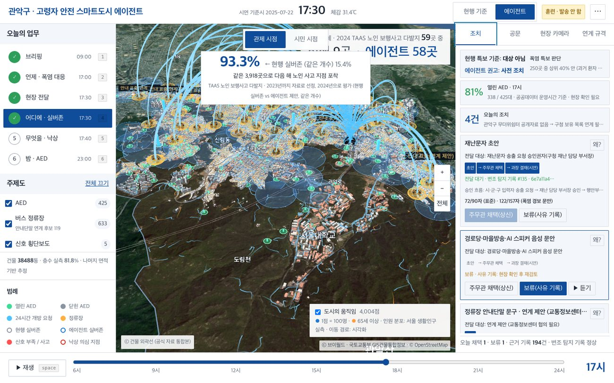
Ganeumja (가늠자)
The AI ordinance compiled into code. Each article maps to one module that performs the check it requires.
Built. Tested on real and simulated records
Built
Calibration, fairness, explanation and human-review gates, plus a citizen-facing report, with 57 tests.
Result
On 6,172 real COMPAS records it reproduced the published false-positive gap (0.423 against 0.220), and it found a gap of 50.9 points across intersecting groups against 29.6 for race alone. In a simulated benefits scenario, no confidence threshold keeps accuracy at 90% with referrals to humans at 30% or less, so the tool returns that automated decisions are not permitted.
Basis
The benefits scenario uses simulated records, since real city logs are not public. COMPAS measures re-arrest, which is itself shaped by policing, and the tool reports that limit.
Next
Plan: test it on real administrative records.
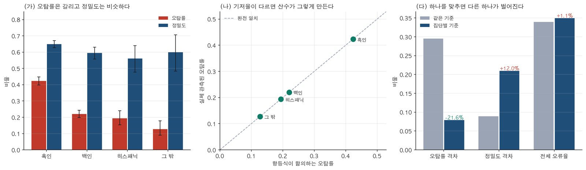
FarmPilot and ReField
Two tools for small farms: crop disease diagnosis from a phone photo, and satellite detection of idle farmland.
FarmPilot prototype, code public. ReField at idea stage
Built
FarmPilot: a seeded MobileNetV3-Small trained on PlantVillage, served through a demo with treatment guidance. ReField: a pipeline pulling Sentinel-2 vegetation data for Haenam to test an idle-land threshold.
Result
FarmPilot reached 97.84% validation accuracy on 38 classes (70,295 training and 17,572 validation images). ReField's 62 real satellite observations gave mean NDVI of 0.604 in the growing season and 0.363 out of it, which supports a threshold of 0.4.
Basis
PlantVillage images are single leaves on plain backgrounds, so field accuracy will be materially lower, and the demo says this on screen. ReField has no ground-truth labels yet, so there is no precision or recall to report.
Next
Plan: test FarmPilot on field photos, and label aerial imagery for ReField.
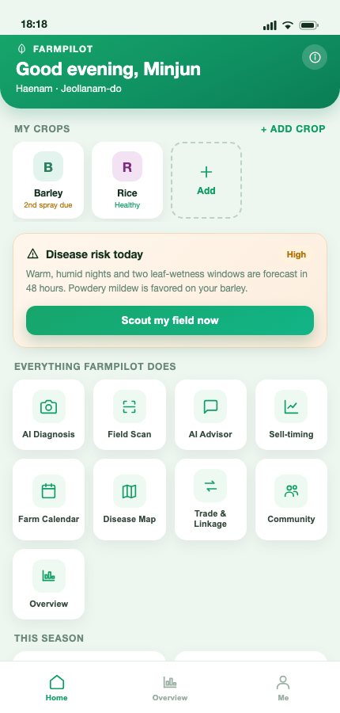
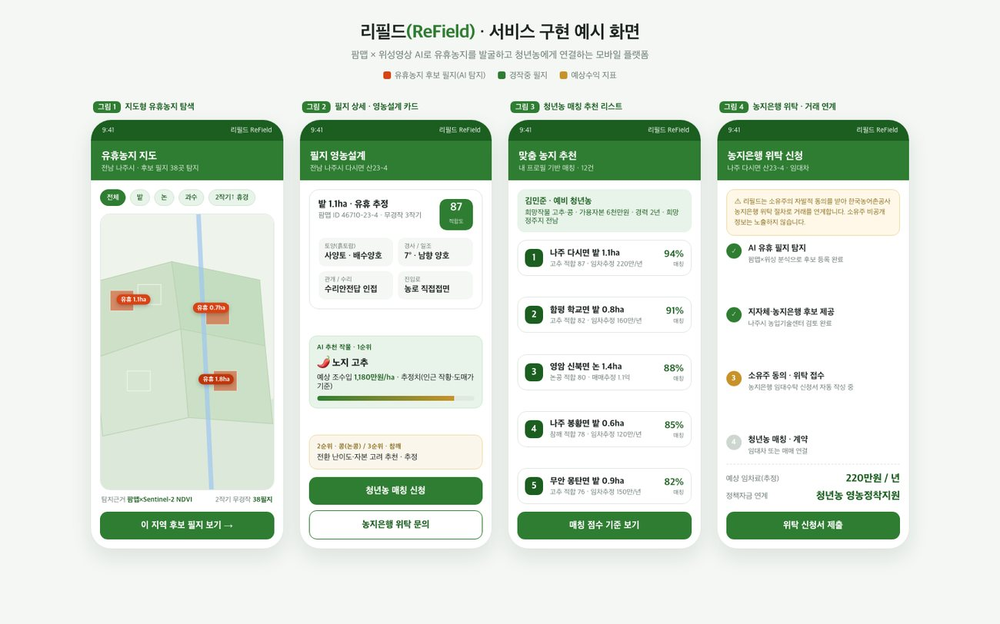
SYNAPTIC
A development and inequality simulation for Ethiopia. It set its own pass mark, missed it, and the miss was published.
Model failed its registered test. No projections published
Built
A panel estimator and pipeline on public data, and a test registered before the model ran. A further 51 pieces on Ethiopia's development were written during the ambassador term.
Result
The pass mark was under 8% average error in GDP per person over 2018 to 2023. The result was 19.2%, a fail.
Basis
The test ran once, as registered. None of the 51 pieces carries a projection from the model.
Next
Plan: fix the model and register a new test before any projection goes out.
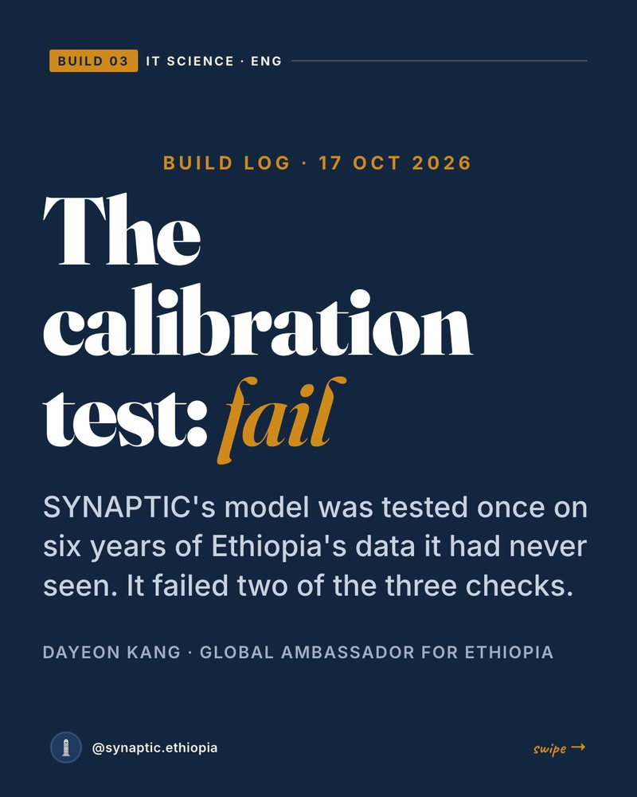
Papers
Status as of November 2026. Nothing here is described as published.
When Does One Temperature Suffice? The Sharpening Exponent as a Representational Mismatch
Under review at IEEE ICASSP 2027. Single author.
Data Element Availability and the Condition-Dependent Axis of Medication-Safety Indicators
Accepted as an e-poster at the Korean Society of Medical Informatics 2026 autumn conference. First author.
MetaMirage: A Mirage-Pair Benchmark for Metacognitive Monitoring in LLMs
Submitted to the Google DeepMind and Kaggle AGI benchmark challenge, Metacognition track.
Closed-Form Optimal Streamwise Power Allocation in Liquid-Cooled Processors
Manuscript. Extended abstract filed September 2026.
Localizing the Bottleneck in ARC-AGI-3: Dynamics are Learnable and Adaptable, but Goal Inference is the Binding Constraint
Manuscript.
The Limits of Unlearning a Clean-Label Detection Backdoor: A Study on ESA's Streak-Detection De-poisoning Task
Manuscript.
Structured Perturbation Stability: An Operator-Restricted Framework for Measuring Semantic Invariance in Transformer Architectures
Unpublished manuscript.
Per-request energy attribution for large language model inference
In draft.
Awards
25 honours, each with the date and the body that issued the certificate.
Research and academic
John Locke Institute Global Essay Prize, Commendation in three categories
Economics, International Relations, and Science and Technology. Awarded 3 October 2026 at Grosvenor House, London.
John Locke Institute Global Essay Prize, Commendation in History
2025.
Third place and Chairman's Award, 9th International Youth Research Paper Competition
Education Association for Software Empowerment with HOBY Korea, 22 December 2025. For the study of physical activity and visual impairment in 1,067 people.
Professor's Award, third place, 5th HOBY Korea International Young Scholars Conference
Presentation track, social sciences, 20 to 21 September 2025. Certificate dated 10 October 2025 and signed by Jeff D. Colgan, Richard Holbrooke Professor of Political Science at Brown University.
Second place in general chemistry and third place in research poster, Korea HOSA State Leadership Conference
July 2026.
Certificate of Achievement, International Math Kangaroo Korea
Honorable achievement, 5 April 2025.
2026 Korea Talent Award
Selected for the central review interview, November 2026.
Global Logic and Reasoning Competition 2026
Final Round qualifier.
8th Korea Code Fair Hackathon
Reached the finals with team 영점, October 2026.
International and civic
Commendation of the Mayor of Seongnam
City of Seongnam, certificate 1509, 14 November 2026, signed by Mayor Shin Sang-jin. The citation is for service as a member of the Seongnam Youth Council.
Ambassador's Award, Embassy of the Philippines
31st Diplomatic International Forum of Seoul, 31 January 2026, signed by Ambassador Bernadette Therese C. Fernandez.
UN SDGs Global Leader, KIECC UN SDG international speech contest
Grand final, 22 February 2025. Run with UN Canada and Concordia University.
Grand Prize, Top-Class Representative Figure
ICAE 2030 Together international conference on the global environment, 2024.
Speaker of the Seoul Metropolitan Council Award, 4th Plastic-Free Competition
HOBY Korea, December 2024.
Speaker of the Gyeonggi Provincial Council Award, 5th Plastic-Free Competition
HOBY Korea, 1 December 2025.
Award of Excellence, 5th Plastic-Free Hybrid Competition
Gyeonggi-do Guri-Namyangju Office of Education with the Green Environment Action Headquarters, 27 December 2025, with team Re Gen.
The Duke of Edinburgh's International Award, Silver and Bronze
Korea Youth Work Agency. Silver awarded 12 January 2026, Bronze 9 July 2025.
Korea Achievement Award, Gold
Korea Youth Work Agency, awarded 13 November 2024.
Diligence Award, 9th Seongnam Youth Council
28 March 2026, for conduct across the council term.
Creative and athletic
Ranatra Fusca Creativity Award, Odyssey of the Mind Korean national team selection
5 March 2021, with team SALT International School. The award carried a place on the Korean national team for the World Finals.
Encouragement Award from the Chairman of the Miral Welfare Foundation, 12th Storytelling Competition
Children and youth division, on improving public understanding of disability. Certificate 2026-519, 23 October 2026.
KASS Championships 2026, three placings
Second in 100 m butterfly, third in 200 m individual medley, third in 100 m breaststroke. Seoul, 22 to 23 May 2026.
Athletic Pioneer Award in swimming
MICA International Scholars, 2025 to 2026 academic year.
School
Dean's List Honor Roll
MICA International Scholars, 2025 and 2026.
Certificates of Distinction in four subjects
Science and English Studies in 2025, Chemistry and American Literature in 2026. MICA International Scholars.
Contact
Scripts and run records for anything on this page are available on request.